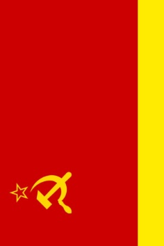

Государства и государственные образования
Энциклопедия государственных образований, связанных с СФСРЮ. Здесь представлена информация о современной СФСРЮ, её предшественниках и различных государственных формах в истории региона.
← Вернуться к категориям Википедии
Советская Федеративная Социалистическая Республика Юльсанна (СФСРЮ)
С 2025 года
Современное государство, основанное на принципах марксизма-ленинизма, народовластия и социалистической федерации. Состоит из субъектов федерации, каждый из которых имеет свои Советы народных депутатов.

Республика Юльсанна (РЮ)
2024 год
Предшествующее государственное образование, существовавшее до создания СФСРЮ. Была основана как демократическая республика с президентской формой правления. В 2025 году была преобразована в СФСРЮ после социалистической революции.
Республика Юльсанна в составе Союза Независимых Государств
2021—2024 годы
Период в истории республики, когда страна входила в состав СНГ как ассоциированный член. В это время были заложены основы государственного строительства, экономики и международных связей будущей независимой республики.

Союз Независимых Государств
с 2021 года
Государтсво